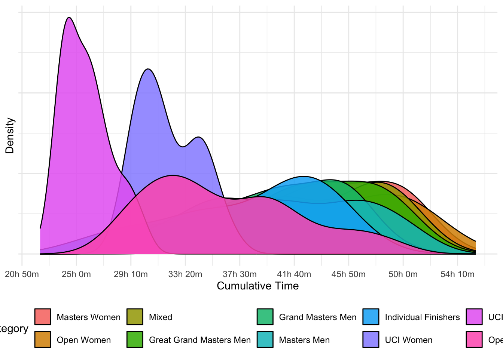
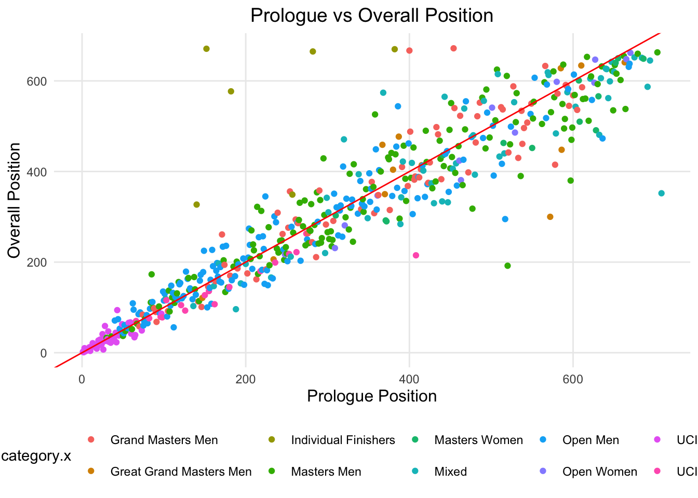
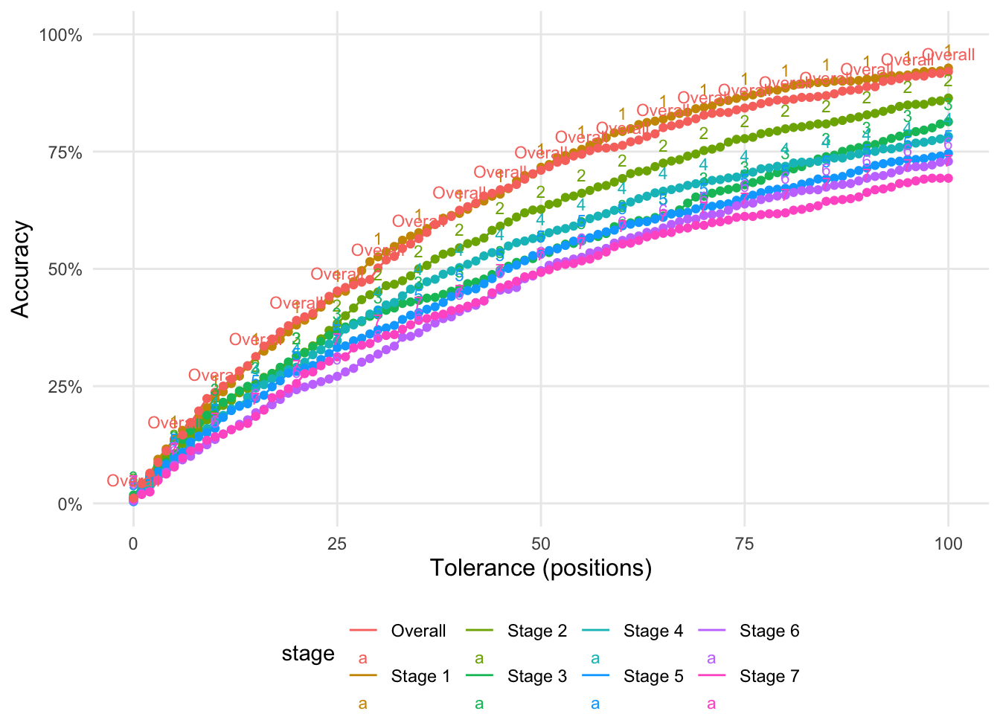

Cape Epic 2025 Analysis
Blog
Sport
Cycling
Epic 2025 Analysis
Here is my take on some analyses of the Cape Epic results, through the eyes of en epidemiologist-competitor, if you will.
Intention
As a particpant and epidemiologist myself, I was interested in a new analysis challenge. This is one of those things when you are half-heartedly chatting in the car on the way back a stage saying, “flip, I wonder how many guys got chicked on that stage”, or “who had the most consistent race”, and instead of just forgetting about it, I took it a bit further. While some of these questions are answered just by assuming what happened to the top teams on TV, I also wanted to place us mere-mortals into context. As a particpant myself, these are some of the questions I had.
In summary, I wanted to know: - the “real” mortality rate of riders - the average time of categories - A tool to track your position over the stages compared to another team. - How well does prologue time predict overall performance? - The number of riders per capita from each country.
While other, more in depth, analyses are possible, I am limited by the data availble online and my real job.
Data Collection
Data was scraped from the results page on the Cape Epic website using Selenium. Numbers may vary slighlty from official ones reported by the Cape Epic. At the time of scraping, some data on riders was not available.
The real mortality rate
The Epic organisers usually report the drop out rate as the drop out rate of teams. While the epic is a team event, the drop out rate of individuals is much less. I present the survival rate of individuals and teams.
Stage | Number of Riders | Survival from Start (%) | Survival from last Stage (%) |
|---|---|---|---|
Prologue | 738 | 100.0 | |
Stage 1 | 707 | 95.8 | 95.8 |
Stage 2 | 696 | 94.3 | 98.4 |
Stage 3 | 636 | 86.2 | 91.4 |
Stage 4 | 586 | 79.4 | 92.1 |
Stage 5 | 567 | 76.8 | 96.8 |
Stage 6 | 545 | 73.8 | 96.1 |
Stage 7 | 544 | 73.7 | 99.8 |
Stage | Number of Riders | Survival from Start (%) | Survival from last Stage (%) |
|---|---|---|---|
Prologue | 1,483 | 100.0 | |
Stage 1 | 1,446 | 97.5 | 97.5 |
Stage 2 | 1,437 | 96.9 | 99.4 |
Stage 3 | 1,367 | 92.2 | 95.1 |
Stage 4 | 1,297 | 87.5 | 94.9 |
Stage 5 | 1,273 | 85.8 | 98.1 |
Stage 6 | 1,245 | 84.0 | 97.8 |
Stage 7 | 1,241 | 83.7 | 99.7 |
How many riders get chicked?
Getting chicked is, colloquially, when a male rider is slower than a female rider. The Cape Epic is one fo the few events where Male and Femalre riders ride the exact same course (and it failry similar times), unlike Cape Town Cycle Tour or Tour De Femmes. There is emerging data that females may be better at handling fatigue than males.
Category | Prologue | Stage 1 | Stage 2 | Stage 3 | Stage 4 | Stage 5 | Stage 6 | Stage 7 | Overall |
|---|---|---|---|---|---|---|---|---|---|
UCI Men | 4.5% | 6.8% | 6.8% | 9.1% | 6.8% | 9.1% | 18.2% | 9.1% | 9.1% |
Individual Finishers | 92.2% | 92.2% | 90.9% | 90.9% | 87.0% | 87.0% | 88.3% | 88.3% | 88.3% |
Open Men | 93.2% | 95.6% | 93.2% | 95.7% | 92.3% | 91.6% | 96.1% | 86.9% | 86.9% |
UCI Women | 94.1% | 94.1% | 94.1% | 94.1% | 94.1% | 94.1% | 94.1% | 94.1% | 94.1% |
Masters Men | 97.3% | 96.2% | 97.3% | 97.2% | 96.6% | 96.6% | 97.7% | 96.0% | 96.0% |
Grand Masters Men | 99.0% | 98.1% | 97.1% | 99.0% | 97.0% | 97.0% | 99.0% | 96.0% | 96.0% |
Great Grand Masters Men | 100.0% | 100.0% | 100.0% | 100.0% | 100.0% | 100.0% | 100.0% | 100.0% | 100.0% |
Masters Women | 100.0% | 100.0% | 100.0% | 100.0% | 100.0% | 100.0% | 100.0% | 100.0% | 100.0% |
Mixed | 100.0% | 100.0% | 100.0% | 100.0% | 100.0% | 100.0% | 100.0% | 98.4% | 98.4% |
Open Women | 100.0% | 100.0% | 100.0% | 100.0% | 100.0% | 100.0% | 100.0% | 100.0% | 100.0% |
Category | Prologue | Stage 1 | Stage 2 | Stage 3 | Stage 4 | Stage 5 | Stage 6 | Stage 7 | Overall |
|---|---|---|---|---|---|---|---|---|---|
UCI Men | 0.0% | 0.0% | 0.0% | 0.0% | 0.0% | 0.0% | 0.0% | 0.0% | 0.0% |
UCI Women | 0.0% | 0.0% | 0.0% | 0.0% | 0.0% | 0.0% | 0.0% | 0.0% | 0.0% |
Open Men | 25.5% | 44.4% | 42.2% | 52.2% | 40.4% | 43.5% | 49.0% | 37.9% | 37.9% |
Individual Finishers | 39.0% | 58.4% | 54.5% | 74.0% | 51.9% | 55.8% | 59.7% | 50.6% | 50.6% |
Masters Men | 49.2% | 67.6% | 64.3% | 77.9% | 66.7% | 69.5% | 74.1% | 60.9% | 60.9% |
Grand Masters Men | 50.5% | 69.5% | 69.5% | 77.1% | 72.3% | 73.0% | 73.7% | 65.7% | 65.7% |
Great Grand Masters Men | 60.9% | 86.4% | 77.3% | 90.5% | 84.2% | 78.9% | 89.5% | 84.2% | 84.2% |
Mixed | 71.4% | 83.6% | 83.8% | 84.6% | 84.1% | 84.1% | 85.5% | 80.6% | 80.6% |
Open Women | 73.3% | 80.0% | 80.0% | 80.0% | 86.7% | 85.7% | 93.3% | 93.3% | 93.3% |
Masters Women | 80.0% | 100.0% | 93.3% | 100.0% | 85.7% | 92.9% | 100.0% | 92.9% | 92.9% |
Track the performance of your team over the stages
If you are interested to see how you paced compared to another team, or the pros, you can use the app below.
#| '!! shinylive warning !!': |
#| shinylive does not work in self-contained HTML documents.
#| Please set `embed-resources: false` in your metadata.
#| standalone: true
#| echo: false
#| messages: false
#| viewerHeight: 1200
library(shiny)
library(tidyverse)
library(DT)
# Load from GitHub
data_url <- "https://raw.githubusercontent.com/bridaybrummer/study_stats_site/main/data/df_full.csv"
df_full <- read_csv(data_url)
# Treat stage as ordered factor only once
stage_levels <- c(
"Prologue", "Stage 1", "Stage 2", "Stage 3", "Stage 4",
"Stage 5", "Stage 6", "Stage 7", "Overall"
)
category_colors <- c(
"UCI Men" = "#1f77b4", # Blue
"Individual Finishers" = "#7f7f7f", # Grey
"Masters Men" = "#2ca02c", # Green
"Open Men" = "#ff7f0e", # Orange
"Grand Masters Men" = "#9467bd", # Purple
"UCI Women" = "#e377c2", # Pink
"Mixed" = "#bcbd22", # Olive
"Great Grand Masters Men" = "#8c564b", # Brown
"Open Women" = "#17becf", # Teal
"Masters Women" = "#d62728" # Red
)
df_full <- df_full %>%
mutate(stage = factor(stage, levels = stage_levels))
ui <- fluidPage(
titlePanel("Team Position by Stage"),
tags$head(
tags$style(HTML("
div.top-left {
float: left;
}
div.dataTables_filter {
text-align: left !important;
}
"))
),
tags$script(HTML("
setTimeout(function() {
document.querySelector('h4').innerText = 'Ready to explore your race story? 🚴♀️✨';
}, 4000);
")),
sidebarLayout(
sidebarPanel(
h4("Welcome! 👋"),
helpText(
"This app visualises stage-by-stage team positions.",
"➤ Select your team and compare it to another — e.g., Like the Ladies African Jersey winners (Team 62)",
"➤ If you cant remember your team number, search the table to find team numbers by name or team.",
"➤ Only categories of the selected teams are shown (others greyed out)."
),
numericInput("selected_team", "Enter a team number (dashed):",
value = 188,
min = min(df_full$team_number),
max = max(df_full$team_number)
),
numericInput("selected_team_2", "Compare With Team Number(dotted):",
value = 62,
min = min(df_full$team_number),
max = max(df_full$team_number)
),
verbatimTextOutput("category_text")
),
mainPanel(
h5("🔍 Search for a Rider or Team:"),
helpText("E.g., search 'HoneyComb' or your team name."),
DTOutput("team_table"),
plotOutput("team_plot", height = "500px")
)
)
)
# Server
server <- function(input, output) {
output$team_table <- renderDT({
df_full %>%
select(team_number, team, rider, category) %>%
distinct() %>%
datatable(
options = list(
pageLength = 5,
lengthChange = FALSE,
dom = '<"top-left"f>tip', # 'f' = search box, now wrapped in a class
scrollY = "200px",
scrollCollapse = TRUE
),
rownames = FALSE,
class = "compact stripe"
)
})
output$team_plot <-
renderPlot({
req(input$selected_team, input$selected_team_2)
team1 <- input$selected_team
team2 <- input$selected_team_2
selected_team <- input$selected_team
selected_team_2 <- input$selected_team_2
selected_category_1 <- df_full %>%
filter(team_number == selected_team) %>%
pull(category) %>%
unique()
selected_category_2 <- df_full %>%
filter(team_number == selected_team_2) %>%
pull(category) %>%
unique()
cat1 <- df_full %>%
filter(team_number == team1) %>%
pull(category) %>%
unique()
cat2 <- df_full %>%
filter(team_number == team2) %>%
pull(category) %>%
unique()
selected_cats <- unique(c(cat1, cat2))
selected_categories <- unique(c(selected_category_1, selected_category_2))
output$category_text <- renderText({
paste("Category of Team 1:", cat1, "\nCategory of Team 2:", cat2)
})
top_category <- df_full %>%
group_by(category, stage) %>%
slice_min(position, with_ties = FALSE) %>%
ungroup()
top_ids <- top_category %>%
mutate(stage = as.character(stage)) %>%
transmute(top_id = paste(team_number, stage)) %>%
pull(top_id)
df_plot <- df_full %>%
mutate(
focus = case_when(
team_number == selected_team ~ "Team 1",
team_number == selected_team_2 ~ "Team 2",
TRUE ~ "Other"
),
# top_team = paste(team_number, stage) %in% top_ids,
category_plot = ifelse(category %in% selected_categories, category, "Other"),
alpha_level = ifelse(focus %in% c("Team 1", "Team 2"), 1,
ifelse(category %in% selected_categories, 0.2, 0.05)
),
stage = factor(stage, levels = c(
"Prologue", "Stage 1", "Stage 2", "Stage 3", "Stage 4",
"Stage 5", "Stage 6", "Stage 7", "Overall"
))
) %>%
mutate(
stage_chr = as.character(stage),
focus = case_when(
team_number == team1 ~ "Team 1",
team_number == team2 ~ "Team 2",
TRUE ~ "Other"
),
color_group = ifelse(category %in% selected_cats, category, "Other"),
color_val = case_when(
color_group == "Other" ~ "grey80",
color_group == selected_category_1 ~ category_colors[selected_category_1],
color_group == selected_category_2 ~ category_colors[selected_category_2],
),
alpha_val = case_when(
focus %in% c("Team 1", "Team 2") ~ 1,
color_group == "Other" ~ 0.1,
TRUE ~ 0.3
),
size_val = case_when(
focus %in% c("Team 1", "Team 2") ~ 1.2,
TRUE ~ 0.4
),
linetype_val = case_when(
focus == "Team 1" ~ "dashed",
focus == "Team 2" ~ "dotted",
TRUE ~ "solid"
)
) %>%
mutate(
stage = factor(
stage,
levels = stage_levels
)
)
ggplot(df_plot, aes(x = stage, y = -position, group = team)) +
geom_line(aes(
color = color_val, alpha = alpha_val,
linetype = linetype_val, size = size_val
)) +
geom_point(aes(color = color_val, alpha = alpha_val), size = 0.5) +
ggrepel::geom_text_repel(
data = df_plot %>%
filter(team_number %in% c(team1, team2)) %>%
group_by(team_number) %>%
filter(as.numeric(factor(stage_chr, levels = stage_levels)) == max(as.numeric(factor(stage_chr, levels = stage_levels)))),
aes(label = paste0("Team ", team_number)),
nudge_x = 0.2,
direction = "y",
size = 4,
hjust = 0,
segment.color = "grey50"
) +
scale_size_identity() +
scale_alpha_identity() +
scale_linetype_identity() +
scale_color_identity() +
scale_x_discrete(
# create more space on the right side of the plot
expand = expansion(mult = c(0.1, 0.2))
) +
labs(
x = "Stage",
y = "Position (higher is better)",
title = "Team Position by Stage",
subtitle = "Selected categories are shown in a bold dot-dahsed line. The rest of the category of the selected teams are show in a thin solid line in the same colour. All other categories are in a faint grey line."
) +
theme_minimal() +
theme(legend.position = "bottom")
})
}
# Run app
shinyApp(ui, server)Average time of categories
As an oveall category, the average time of each category is shown below. This unfrotunately, doesn’t do a good job of showing the other races that were happening within these categories.
Characteristic | Prologue | Stage 1 | Stage 2 | Stage 3 | Stage 4 | Stage 5 | Stage 6 | Stage 7 |
|---|---|---|---|---|---|---|---|---|
UCI Men | 66 (4) | 255 (19) | 146 (9) | 227 (18) | 204 (14) | 285 (28) | 260 (26) | 103 (8) |
UCI Women | 81 (6) | 313 (23) | 179 (12) | 288 (23) | 255 (20) | 354 (24) | 323 (26) | 126 (9) |
Open Men | 89 (14) | 359 (55) | 197 (28) | 358 (80) | 288 (45) | 401 (64) | 371 (62) | 137 (21) |
Individual Finishers | 92 (15) | 378 (67) | 208 (35) | 390 (88) | 293 (45) | 405 (60) | 370 (58) | 139 (21) |
Grand Masters Men | 95 (11) | 385 (46) | 212 (27) | 413 (89) | 312 (41) | 435 (58) | 404 (59) | 149 (20) |
Masters Men | 98 (15) | 397 (63) | 216 (32) | 410 (89) | 319 (47) | 444 (67) | 414 (66) | 151 (22) |
Great Grand Masters Men | 101 (11) | 406 (42) | 225 (27) | 452 (84) | 334 (41) | 462 (59) | 439 (58) | 160 (19) |
Open Women | 105 (11) | 419 (53) | 229 (24) | 455 (87) | 343 (40) | 477 (65) | 452 (60) | 169 (21) |
Mixed | 106 (16) | 421 (59) | 230 (31) | 444 (93) | 337 (43) | 467 (63) | 436 (61) | 160 (20) |
Masters Women | 110 (13) | 427 (46) | 234 (26) | 452 (79) | 353 (36) | 484 (49) | 456 (47) | 167 (16) |
1Mean (SD) | ||||||||
Who what and where
Which country had the higest per capita number of epic riders form their country?
Country | Number of Riders | Population | Riders per 1 million population |
|---|---|---|---|
Andorra | 4 | 80,856 | 494.71 |
Isle of Man | 1 | 84,165 | 118.81 |
South Africa | 666 | 63,212,384 | 105.36 |
Switzerland | 69 | 8,888,093 | 77.63 |
Malta | 4 | 552,747 | 72.37 |
Costa Rica | 23 | 5,105,525 | 45.05 |
Namibia | 13 | 2,963,095 | 43.87 |
New Zealand | 19 | 5,223,100 | 36.38 |
Belgium | 37 | 11,787,423 | 31.39 |
Mauritius | 3 | 1,261,041 | 23.79 |
Slovenia | 4 | 2,120,461 | 18.86 |
Spain | 83 | 48,347,910 | 17.17 |
Netherlands | 30 | 17,877,117 | 16.78 |
Portugal | 16 | 10,578,174 | 15.13 |
Czechia | 16 | 10,864,042 | 14.73 |
Estonia | 2 | 1,370,286 | 14.60 |
Austria | 12 | 9,131,761 | 13.14 |
Latvia | 2 | 1,877,445 | 10.65 |
Norway | 5 | 5,519,594 | 9.06 |
Germany | 74 | 83,280,000 | 8.89 |
Lesotho | 2 | 2,311,472 | 8.65 |
Eswatini | 1 | 1,230,506 | 8.13 |
Dominican Republic | 9 | 11,331,265 | 7.94 |
Croatia | 3 | 3,859,686 | 7.77 |
Denmark | 4 | 5,946,952 | 6.73 |
Sweden | 7 | 10,536,632 | 6.64 |
Australia | 15 | 26,658,948 | 5.63 |
Finland | 3 | 5,583,911 | 5.37 |
Canada | 21 | 40,097,761 | 5.24 |
Singapore | 3 | 5,917,648 | 5.07 |
United Kingdom | 30 | 68,350,000 | 4.39 |
Israel | 4 | 9,756,600 | 4.10 |
Italy | 24 | 58,993,475 | 4.07 |
Botswana | 1 | 2,480,244 | 4.03 |
Guatemala | 7 | 18,124,838 | 3.86 |
Greece | 4 | 10,405,588 | 3.84 |
France | 26 | 68,287,487 | 3.81 |
Slovakia | 2 | 5,426,740 | 3.69 |
Argentina | 16 | 45,538,401 | 3.51 |
Lithuania | 1 | 2,871,585 | 3.48 |
Zimbabwe | 5 | 16,340,822 | 3.06 |
Ecuador | 5 | 17,980,083 | 2.78 |
Hong Kong | 2 | 7,536,100 | 2.65 |
Venezuela | 6 | 28,300,854 | 2.12 |
Brazil | 40 | 211,140,729 | 1.89 |
Ireland | 1 | 5,307,600 | 1.88 |
United States of America | 59 | 334,914,895 | 1.76 |
Peru | 4 | 33,845,617 | 1.18 |
Poland | 4 | 36,687,353 | 1.09 |
Chile | 2 | 19,658,835 | 1.02 |
United Arab Emirates | 1 | 10,483,751 | 0.95 |
Colombia | 4 | 52,321,152 | 0.76 |
Angola | 2 | 36,749,906 | 0.54 |
Mexico | 5 | 129,739,759 | 0.39 |
Cameroon | 1 | 28,372,687 | 0.35 |
Philippines | 4 | 114,891,199 | 0.35 |
Nepal | 1 | 29,694,614 | 0.34 |
Mozambique | 1 | 33,635,160 | 0.30 |
Taiwan | 4 | ||
6 |
?@tbl-tbl-riders_per_1_mil_table is sorted by the highest per capita of riders. Very small countries naturally skew results, however, teams from Switzerland, Namibia, Costa Rica and New Zealand deserve a special mention
How well does prologe result predict overall result?
We all know the saying “You don’t win on the prologue, but you can lose”, to me this is essentially saying, your prologue doesn’t predict your overall performance.

In Figure 2, the red line is the 1:1 line, where the prologue time is equal to the overall time. Those on the right of the red line indicate that riders that had a better placement overall than their prologue position. Those on the left of the red line indicate that riders that had a worse placement overall than their prologue position.
Stage | Spearman's Correlation | R^2 |
|---|---|---|
Prologue | 1.00 | 1.00 |
Stage 1 | 0.95 | 0.90 |
Stage 2 | 0.93 | 0.85 |
Stage 3 | 0.92 | 0.84 |
Stage 4 | 0.93 | 0.84 |
Stage 5 | 0.91 | 0.81 |
Stage 6 | 0.91 | 0.80 |
Stage 7 | 0.90 | 0.78 |
Overall | 0.94 | 0.87 |
Table 5 shows two metrics , Spearman’s correlation and R^2. These two metrics show that prologue positions and overall position are quite strongly correlated, although this correlation decreased over the stages. Neither of these metrics account for small changes in position, which may not show well when analyzing all riders, but for the individual riders, it is quite important.”

Figure 3 reports on the accuracy of predicting the position of a team based on the prologue time. The X-axis is the tolerance of the prediction. A tolerance of 100 means that the predicted position is within 100 positions of the actual position. The Y-axis is the proportion of teams that were predicted correctly. Accuracy in this case is calculated as the proportion of correct predictions.